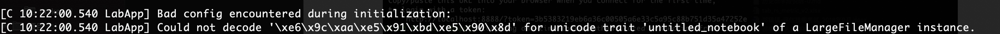
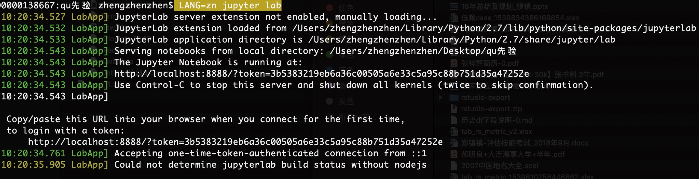

基础工具包安装pip
在安装package之前，首先要安装的就是包管理器。
1.pip
安装pip sudo easy_install pip
通过pip安装python包 pip install xxx
常见问题
# 当前版本
pip --version
# 版本升级(有些包安装需要依赖高级版本)
pip install --upgrade pip
## 升级某些包
pip install --upgrade SomePackage
# 安装包时候报错`time out`
pip --default-timeout=100 install xxx
## 指定安装目录
pip -t 目标目录 xxx
更新pip给出一个最简单的办法就是通过pip uninstall pip卸载pip，再用easy_install pip安装pip,这样安装的就是最新版本的pip了。
权限
在mac上安装包的时候，因为系统限制不让写到内容到系统目录里去。解决方法
- 重新安装一个自己版本的python，比如可以用ancoda安装
- pip安装的时候加入参数
pip install xxx --user，安装到当前用户目录下。
安装完成后还需要将该目录加到环境变量里才能使用
export export PATH=/Users/$your_name/Library/Python/2.7/bin/:$PATH
更新某个包时候报错
Cannot uninstall 'six'. It is a distutils installed project and thus we cannot accurately determine which files belong to it which would lead to only a partial uninstall.
解决办法：
pip install six --upgrade --ignore-installed six
当机器上有多个版本python，安装到指定的python版本中
pip install -t /home/work/zhenzhen/python2.7/lib/python2.7/site-packages BeautifulSoup4
2.brew
/usr/bin/ruby -e "$(curl -fsSL https://raw.githubusercontent.com/Homebrew/install/master/install)”
https://nteract.io
直接双击打开.ipynb的文件
markdown
图片
现在很多makdown编辑器是可以支持拖拽本地图片或者截屏就可以直接在markdown中生成图片的，非常方便，比如我现在在用的MWeb编辑器。
但是如果同一篇内容需要在不同的平台上进行发布，那图片处理起来就比较麻烦。因为需要重新上传到不同平台。
最方便的处理方式就是利用图床， 这里以七牛云存储为例。

step1： 首先在七牛官网上申请注册账号，并且添加对象存储
jupyterLab
现在Rstudio已经成为R社区使用最广泛的集成编辑器，其在配合Rstudio公司开发的软件包使用上有天然的优势，如knitr、bookdown、blogdown、sparklyr、tidyverse等，让我们在数据导入、清洗、可视化、分析过程中少踩了不少坑。
然而，有时候我们也会发现，利用Rmarkdown进行探索性数据分析时，尤其是初学者，总是不断花费时间在文档编译上，而压缩了真正数据探索的时间。很多时候，我很羡慕python用户，因为他们拥有Ipython、jupyter notebook等工具，让我们一边分析数据，一边插入markdown文本，并且还能实时看到结果，这些特性R用户也可以实现吗？当然，这就是我今天推荐的jupyterlab 编辑器。
安装jupyterLab
首先我们要明白，jupyterLab是一个python包，所以要使用jupyterLab首先要配置python环境。对于普通用户，包括linux、win和Mac用户，建议直接下载anaconda发行版进行安装，这样免去了既要安装python又要安装其他包的麻烦，是最简洁的方法。
对于平时很少使用python的人来说，可能无法忍受anaconda全家桶式的安装模式，想更轻便的安装使用，那也很容易。
- 安装
Mac 和 Linux用户系统自带了python，可以直接使用pip install jupyterlab安装jupyterLab包。
win用户先在python官网下载安装python，然后使用pip install jupyterlab安装jupyterLab包。
- 运行
在终端输入jupyter lab即可以在默认浏览器中打开编辑器界面，若不能，请检查下python路径配置是否正确。
“咦，怎么只能选择python，R去哪了”，各位看官莫急，这是因为R端缺少必要的包，还不能和jupyter进行通信，等把这些包安装好进行配置后就可以了。
- 配置R
要把先前打开的jupyterLab程序全部关闭后再进行以下操作
安装必要的依赖包
install.packages(c('repr', 'IRdisplay','evaluate', 'crayon','pbdZMQ','devtools','uuid', 'digest'))
IRkernel包没有放在CRAN上，需要通过GitHub安装
devtools::install_github('IRkernel/IRkernel')
IRkernel::installspec() #确保jupyterLab能找到R解释器安装位置
- 再次在终端运行
jupyter lab，选择R图标打开，你就可以在jupyterLab进行数据分析啦
jupyterLab的主要特性绘图函数自动插入图片ggplot2绘图完美支持
常见问题
jupyter lab启动提示

应该是编码问题，暂时的解决方案https://github.com/jupyter/notebook/issues/2789#issuecomment-338380336
LANG=zn jupyter lab

这个问题后来查了下说是python2的bug，安装python3就不会出现这个问题。
但是很多代码都是python2写的，用pip3安装jupyter之后，想切换写内核。
jupyter kernelspec list
https://www.cnblogs.com/Jeffiy/p/4861528.html
本例的Jupyter安装在Python3下，以增加Python2内核为例。
首先确认在Python3下已安装了内核：
ipython kernel install --user
#or
python3 -m ipykernel install --user
然后确保Python2下安装了ipykernel
sudo pip2 install -U ipykernel
然后运行如下命令：
python2 -m ipykernel install --user
测试机上安装jupyter
https://cloud.tencent.com/developer/article/1147487
- 安装jupyter
- 生成密码 python -c "import IPython;print IPython.lib.passwd()"
- 修改配置文件
18机器上配置
/home/work/.jupyter/jupyter_notebook_config.py
如果启动报错
socket.gaierror: [Errno -2] Name or service not known
可以加上自己的ip
jupyter notebook --ip=xxxx
jupyter lab --ip=10.100.114.120
colab
google 基于jupyter开发的存在在google driver上的网页版
https://colab.research.google.com/
本身功能上差不太多，主要是有search和share功能，查看别人分享的代码